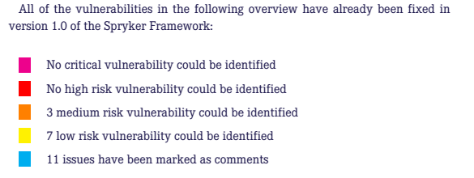

Security Audit
used to be: http://spryker.github.io/getting-started/security-audit-results/
A security audit was performed on our Commerce OS between February 9 and March 30 2016.
The audit was conducted by SektionEins.
The evaluation of the Commerce OS was done without having prior knowledge of the source code, in order to protect it from attackers. Where it was the case, the found vulnerabilities were verified using the Demoshop.
The image below shows the findings of the security audit:

You can find a summary of the security audit report here.
Procedure
The security audit followed the steps below:
- Source code audit
This step mainly consisted of manually reading the source code with added support from using pattern scanning tools that search for specific functions known to potentially add vulnerabilities to the system. - Manual verification
The findings of the pattern scanning tools were manually evaluated. - Risk assessment
A risk evaluation was performed on all the vulnerabilities that were found during the previous two steps.
Commerce OS Security Audit Results
During the security audit only few minor and medium rated problems were identified in the Commerce OS.
All the problems were taken care of and have been resolved by our team.
The security audit that was performed on the Commerce OS reveled no common security vulnerabilities such as SQL injection. The safe use of functions showed that the Commerce OS is robust and secure. This security audit has confirmed that the Commerce OSs source code is well structured and easy to read.
To enforce the secure coding practices, our team has developed a custom code sniffer, that prevents usage of potentially vulnerable code patterns. You can find an overview of the sniffer tool here together with an installation guide. We recommend that you use this tool when developing a project that uses our Commerce OS.
Demoshop Security Audit Results
Most of the problems reported for Demoshop don’t have to do with the Commerce OS itself. They must not be seen as actual vulnerabilities, but must be used as observations that should help you understand how to further secure shops built on top of the Spryker Commerce OS.
See Secure Coding Practices for a list of secure coding recommendations.
See also the Security Audit Report.